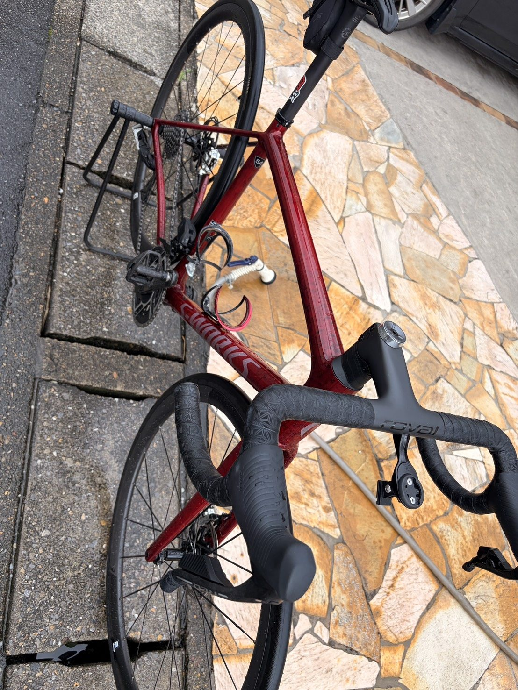

雨上がりの唐沢ゴルビー5本。パンク修理後も過去一番先まで走れた
今日は友人2人と合計3人で唐沢ゴルビーへ。雨上がりで路面は濡れていたが、走れそうだったので予定どおり外へ出た。
1本目の直後には友人のチューブレスタイヤがパンクし、修理で流れが完全に止まった。それでも5分×5本を完遂。5本平均は342Wで、5分間の到達地点も過去一番先まで伸びた。

雨上がりに友人3人でゴルビー
天気は微妙だった。雨は上がっていたものの路面には水が残り、乾いた日と同じ感覚では走れない。ブレーキやコーナー、白線、落ち葉、細かい砂へ注意しながら唐沢へ向かった。
メニューはいつものゴルビー5分×5本。苦しいことは分かっているが、今日は友人がいるので簡単にはやめにくい。ひとりで追い込む日とは少し違う緊張感があった。
1本目の直後にパンク
1本目を終えたところで友人のひとりがパンクした。チューブレスタイヤだったため修理には少し苦戦。全員で止まり、走れる状態へ戻るまで作業した。
待っている間に体は冷え、ゴルビーの流れも完全に切れた。一度止まったあとで高強度を再開するのは気持ちの面でもきつい。それでも修理が終わり、3人そろって2本目へ進んだ。
5本平均342W、前回より7W上がった
結果は1本目338W、2本目354W、3本目352W、4本目331W、5本目336W。5本平均は約342Wで、75kg基準なら4.56W/kgになる。
前回の唐沢ゴルビーは5本平均約335Wだったので今回は約7W上がった。特にパンク修理後の2本目と3本目が今日の最高出力になった。流れが切れても集中を戻せたのは良かったと思う。
4本目で落ちても5本目で戻せた
4本目は331Wまで落ちた。呼吸も脚もきつく、ここから最後の1本を始めるのが一番嫌だった。それでも5本目は336Wまで戻せた。
大きく上げ直せたわけではないが、完全な右肩下がりにはならなかった。4本目で落ちても最後に少し持ち直せたことは、今日の数字の中で一番うれしい部分かもしれない。
5分間で過去一番先まで走れた
今回はパワーだけでなく、5分間の到達地点も過去一番先まで伸びた。数字と実際の距離の両方で変化が見えた。
平均気温は25.8℃。最近続いていた30℃を超える練習より明らかに走りやすく、気温の影響は大きい。暑い日の実走や室内SSTが効いた可能性はあるが、暑熱適応だけを理由にはできない。それでも以前より先へ進めた事実は残る。
濡れた路面を走ったあとは洗車
高強度のあとの下りは、いつも以上に慎重になった。今日は無事に終えられたが、5分走の数字より安全に下りを処理できたことの方が大切である。
帰宅後はそのままAethos2を洗車した。雨上がりを走るとフレーム下側、ブレーキ周辺、チェーン、プーリー、BB周辺へ細かい砂や泥が付く。面倒ではあるが、きれいになった車体を見ると気持ちはいい。

今回やってみて思ったこと
雨上がり、パンク修理、長い中断と予定どおりには進まなかった。それでも友人と一緒に再開し、ゴルビー5本を完遂できた。5本平均342Wで過去一番先まで走れたので、外で高い出力を出す練習としては十分だった。
最近は室内で一定ペースを積み、外では勾配を使って高出力を出す役割分担を意識している。今回はその外練習がうまくいった日。ただしTSSは137.4なので、達成感のまま強度を重ねず次は回復を優先する。
自分用メモ
- ゴルビー338W / 354W / 352W / 331W / 336W、5本平均342W
- W/kg75kg基準で5本平均4.56W/kg
- 全体34.09km / 1時間41分 / 695mアップ / NP249W / IF0.905 / TSS137.4
- 心拍平均125bpm / 最大167bpm
- 気温平均25.8℃ / 最高29℃ / 推定発汗量約1.0L
- メモ1本目後にパンク修理。濡れた下りは慎重に走り、帰宅後に洗車